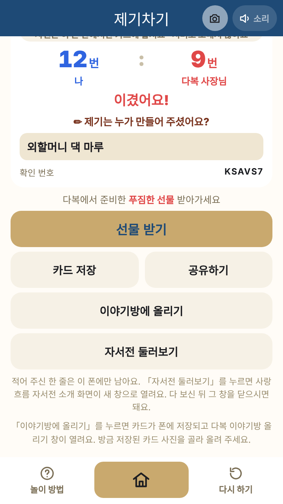
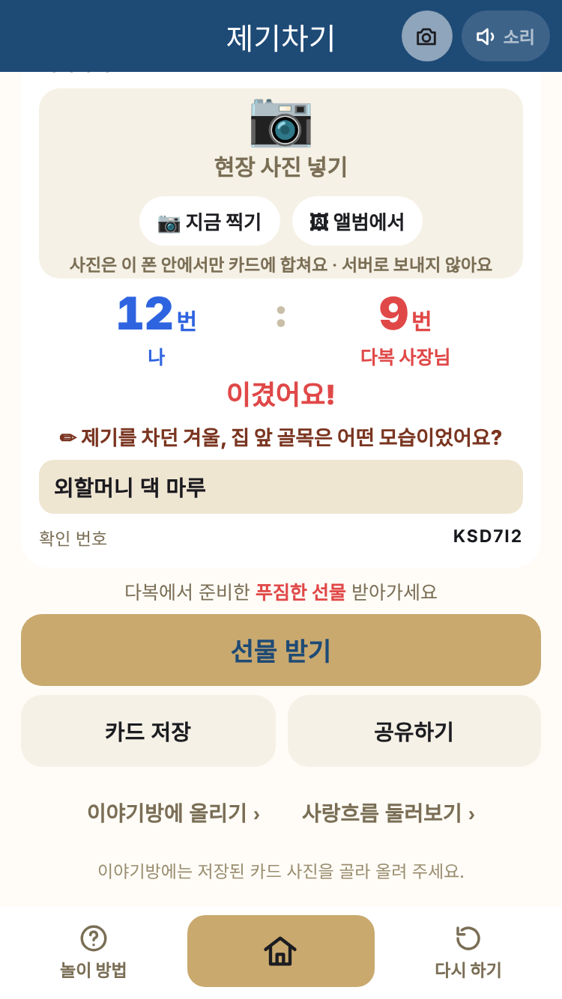

그때 이야기 · 결과 카드 바꿈 전후
사랑흐름-놀이-005 (GPT · 총괄 검토) 반영 · 시험판 www.loveflow.ai.kr/nori/lab/ 에서 바로 해 보실 수 있어요 · 손님 화면은 그대로
1. 결과 카드 아래


- 큰 단추는 셋: 선물 받기 · 카드 저장 · 공유하기
- 「이야기방에 올리기」 「사랑흐름 둘러보기」는 맨 아래 작은 글줄 (사랑흐름 첫 화면 · 교육용 주소에서는 감춤)
- 「자서전 둘러보기」 단추와 긴 안내 글 걷음
- 적는 칸 안내: 「떠오르는 사람이나 장소를 한 줄로 적어 보세요」
- 「카드 저장」을 「결과 사진 저장」으로 바꾸는 일은 대표님 확정 뒤 (총괄이 알려 주심)
- 「그때는」 글(시작 전 창)은 그대로
2. 물음 (놀이 너머 사람 · 집 · 골목으로)
| 놀이 | 전 | 후 |
|---|---|---|
| 가위바위보 | 가위바위보는 주로 누구와 하셨어요? | 가위바위보로 순서를 정하던 동네 친구들, 기억나세요? |
| 구슬 홀짝 | 구슬을 제일 많이 모았던 때, 기억나세요? | 모은 구슬을 숨겨 두던 곳은 집 어디였어요? |
| 묵찌빠 | 묵찌빠 하면 떠오르는 얼굴이 있으세요? | 그 시절 제일 붙어 다니던 친구는 누구였어요? |
| 쌀보리 | 쌀보리 하며 같이 웃던 사람은 누구였어요? | 쌀보리 하며 둘러앉던 방은 어떤 방이었어요? |
| 팔씨름 | 팔씨름으로 겨뤄 본 사람 중 기억나는 분이 있으세요? | 팔씨름 하면 떠오르는, 힘이 세던 어른이 계셨나요? |
| 엿치기 | 엿장수 아저씨가 오던 골목, 기억나세요? | 엿장수 가위 소리가 들리던 골목은 어떤 모습이었어요? |
| 원판 다트 | 어릴 적 장터나 유원지에는 누구와 가셨어요? | 장터나 유원지에 가던 날, 누구 손을 잡고 가셨어요? |
| 투호 | 명절이면 누구와 어디에 모이셨어요? | 명절에 모이던 그 집은 어떤 집이었어요? |
| 골프 | 해 질 때까지 놀던 공터, 어디였어요? | 해 질 때까지 놀던 공터 옆에는 무엇이 있었어요? |
| 활쏘기 | 손수 만든 장난감 중에 기억나는 게 있으세요? | 장난감을 손수 만들어 주던 분이 계셨나요? |
| 제기차기 | 제기는 누가 만들어 주셨어요? | 제기를 차던 겨울, 집 앞 골목은 어떤 모습이었어요? |
| 공기놀이 | 공기는 누구와, 어디서 하셨어요? | 공기를 하던 마루가 있던 집, 어떤 집이었어요? |
| 무궁화 꽃이 피었습니다 | 무궁화 꽃이 피었습니다, 어느 골목에서 하셨어요? | 술래잡기하던 골목에서 같이 놀던 친구들, 기억나세요? |
| 운동회 달리기 | (새 놀이) | 운동회 날, 운동장 가에서 응원해 주던 사람이 있었나요? |
| 번데기 돌림판 | 번데기 아저씨는 어느 골목에 오셨어요? | 번데기 아저씨가 오던 골목은 어떤 모습이었어요? |
| 오목 | 오목 두며 마주 앉던 사람이 있으세요? | 오목을 두며 마주 앉던 사람은 누구였어요? |
| 알까기 | 알까기 하며 웃고 다투던 친구는 누구였어요? | 알까기 하던 그 방에는 누가 함께 있었어요? |
| 딱지치기 | 딱지를 제일 많이 따 본 날, 기억나세요? | 딱지를 치던 그 시절, 살던 동네는 어떤 곳이었어요? |
| 동그란 딱지 | 학교 앞 문방구에서 제일 자주 산 건 뭐였어요? | 학교 앞 문방구 가는 길은 어떤 길이었어요? |
| 구슬치기 | 구슬치기 하던 골목은 어디였어요? | 그때 구슬을 같이 갖고 놀던 친구가 기억나세요? |
| 윷놀이 | 설날 윷놀이는 누구와 하셨어요? | 설날 윷놀이 하던 집에는 누가 모여 계셨어요? |
| 사방치기 | 사방치기 하던 마당이나 골목, 기억나세요? | 사방치기 금을 긋던 마당은 어떤 집 마당이었어요? |
| 수건돌리기 | 수건돌리기 하던 날, 함께 둘러앉은 사람들이 기억나세요? | 둥글게 둘러앉던 그 자리에 누가 있었어요? |